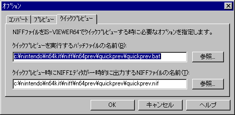

Selecting the "Options" command from the Tools menu brings up the Tool Options dialog. Here you can specify options for converting and previewing NIFF files.
Use the "Convert" tab to specify options for converting NIFF files into display lists.

Use this dialog to specify the name of the batch file to execute when the "Convert" command is selected from the Tools menu, as well as the name of the temporary file that NIFF Editor will output at conversion time. This can be easily done by clicking the Browse button and selecting files from the File dialog.
The parameter defaults are:
Use the "Preview" tab to set options for previewing NIFF files with NINTENDO64.

Use this dialog to specify the name of the batch file to execute when the "Preview" command is selected from the Tools menu, as well as the name of the temporary file that NIFF Editor will output at preview time. This can be easily done by clicking the Browse button and selecting files from the File dialog.
The parameter defaults are:
Use the "Quick preview" tab to set options for quick preview of NIFF files with NINTENDO64.
Use this dialog to specify the name of the batch file to execute when the "Quick Preview" command is selected from the Tools menu, as well as the name of the temporary file that NIFF Editor will output at quick-preview time. This can be easily done by clicking the Browse button and selecting files from the File dialog.
The parameter defaults are: